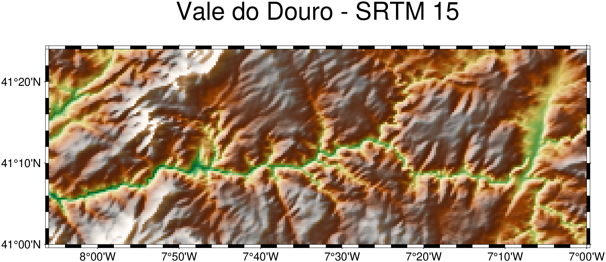

using GMT, HTTP
dgt_lidar([0., 1., 0., 1.]; user="você@exemplo.com", password="s3cr3t", save=true)Download de Dados LIDAR de Alta Resolução de Portugal
Note
For an Inglish version of this tutorial, click here.
A Direção-Geral do Território (DGT), fornece gratuitamente dados de elevação de alta resolução derivados de LIDAR, cobrindo todo o território continental e as ilhas portuguesas através do seu portal de Distribuição Colaborativa de Dados (CDD).
O GMT.jl fornece duas funções para trabalhar com este conjunto de dados:
- dgt_lidar — autentica-se no portal da DGT e descarrega todos os blocos (tiles)que intersectamuma caixa delimitadora (bounding box).
- dgt_mosaic — agrupa os blocos descarregados num único GeoTIFF recortado.
Estão disponíveis cinco coleções:
| Coleção | O que mede | Resolução |
|---|---|---|
MDS-2m |
Modelo Digital de Superfície (copas/telhados) | 2 m |
MDT-2m |
Modelo Digital do Terreno (solo nu) | 2 m |
MDS-50cm |
Modelo de superfície | 50 cm |
MDT-50cm |
Modelo de terreno | 50 cm |
LAZ |
Nuvem de pontos bruta (formato LAS/LAZ) | — |
A coleção predefinida é a MDS-2m (modelo de superfície de 2 m). Todas as coleções estão georreferenciadas em ETRS89/PT-TM06 (EPSG:3763) e distribuídas como GeoTIFF (excepto o LAZ).
Pré-requisitos
Criar uma conta na DGT
Registe-se gratuitamente em https://cdd.dgterritorio.gov.pt/ e confirme o seu e-mail. O acesso é concedido imediatamente.
Guardar credenciais uma vez
Passe o seu e-mail e palavra-passe com save=true para escrever um ficheiro de credenciais ~/.dgt que todas as chamadas futuras lerão automaticamente:
O ficheiro ~/.dgt resultante terá este aspeto:
# Login data for the DGT LIDAR downloads
login você@exemplo.com
password s3cr3tTambém pode criar ou editar o ficheiro directamente com qualquer editor de texto.
Carregar a extensão
A função dgt_lidar reside na extensão do pacote GMTDGTLidarExt, ativada automaticamente quando o HTTP é carregado:
using GMT, HTTPA partir deste ponto, todos os exemplos assumem que ambos os pacotes estão carregados e que o ficheiro ~/.dgt existe.
Caixa Delimitadora (Bounding Box) — a Forma Directa
A chamada mais directa passa por uma caixa delimitadora de 4 elementos [min_lon, max_lon, min_lat, max_lat] em graus decimais WGS84. Vamos descarregar o modelo de superfície de 2 m para o Parque Natural da Arrábida, uma extensão de falésias de calcário impressionantes a sul de Lisboa:
dgt_lidar([-8.995, -8.968, 38.473, 38.486]; output_dir="_arrabida", verbose=2)O prefixo _arrabida indica ao dgt_lidar para guardar os blocos em ~/.gmt/DGT/arrabida/MDS-2m/. Sem qualquer prefixo de sublinhado, o caminho é interpretado literalmente. Com verbose=2 verá o progresso completo:
--- DGT CDD LIDAR Downloader ---
Bounding box : (-8.995, -8.968, 38.473, 38.486)
Output dir : /home/user/.gmt/DGT/arrabida
Collections : MDS-2m
Bbox divided into 1 sub-queries
Found 12 items
Total unique URLs found: N
Downloading collection: MDS-2m
[1/12] https://cdd.dgterritorio.gov.pt/dgt-be/v1/download/...
...
Done: 12 downloaded, 0 skipped.Os downloads são reutilizáveis — ficheiros existentes são ignorados silenciosamente. Executar o mesmo comando após uma interrupção apenas descarrega o que falta.
Dry Run — Analise o Escopo Antes de Descarregar
O dry=true autentica-se e consulta a API STAC, mas ignora todos os downloads. É a forma mais rápida de verificar quantos blocos cobrem a sua área de interesse antes de iniciar uma transferência longa:
dgt_lidar([-8.995, -8.968, 38.473, 38.486]; dry=true, collection="MDS-50cm", verbose=2)--- DGT CDD LIDAR Downloader [DRY RUN] ---
Bounding box : (-8.995, -8.968, 38.473, 38.486)
Collections : MDS-50cm
Bbox divided into 1 sub-queries
Found 12 items
Total unique URLs found: 70
Collection: MDS-50cm (70 files)
MDS-50cm-124170-06-2024.tiff
MDS-50cm-127168-06-2024.tiff
...Coordenadas de Ponto — Bloco Único
Quando apenas se precisa do bloco que cobre uma localização específica, passe a longitude e latitude directamente como dois escalares ou como um vetor de 2 elementos. O dgt_lidar descarrega exatamente o único bloco que contém o ponto:
# Forma escalar — o bloco que contém o cume da Serra da Estrela
dgt_lidar(-7.607, 40.322; output_dir="_estrela")# Forma de vetor de 2 elementos — resultado idêntico
dgt_lidar([-7.607, 40.322]; output_dir="_estrela")Expandir para Blocos Vizinhos
Utilize neighbors para incluir blocos circundantes. O neighbors segue a mesma convenção que mosaic: um número inteiro N adiciona N anéis de blocos em todos os lados (resultando numa grelha de (2N+1)×(2N+1)), ou um vetor de 2 elementos [Nx, Ny] para expansão assimétrica.
# Grelha de blocos 3×3 centrada no cume da Serra da Estrela
dgt_lidar(-7.607, 40.322; neighbors=1, output_dir="_estrela")# Pegada mais larga: 5 blocos este-oeste, 3 norte-sul
dgt_lidar(-7.607, 40.322; neighbors=[2,1], output_dir="_estrela")Utilizando um Nome de Localidade — Despacho via Geocoder
A função geocoder transforma um endereço textual num GMTdataset que transporta coordenadas e uma caixa delimitadora ds_bbox. Passar esse dataset directamente ao dgt_lidar utiliza essa caixa delimitadora como região de download — não é necessária a procura manual de coordenadas.
D = geocoder("Palacio da Pena, Sintra, Portugal")Attribute table
┌────────────┬────────┬───────────────────────┬────────────┬─────────────────┬────────┬──────────────┬───────────┬──────────────┬────────────────┬───────────┬──────────┬─────────────────┬──────────────┬──────────┬────────────┬──────────┬─────────────────────┬───────────────────────┬─────────────────┬──────────┬───────────────────────────────────────────────────────────────────────────┬───────────────────────────────────────────────────────────────────────────────────────────────────────────────────────────────────────────────────────────────────────────────────────────────────────┬─────────────────────────────────────────────┬────────┐
│ lat │ county │ suburb │ lon │ road │ town │ address_rank │ place_id │ municipality │ ISO3166-2-lvl6 │ osm_id │ country │ ref │ country_code │ postcode │ place_rank │ class │ importance │ neighbourhood │ historic │ osm_type │ city │ display_name │ boundingbox │ type │
├────────────┼────────┼───────────────────────┼────────────┼─────────────────┼────────┼──────────────┼───────────┼──────────────┼────────────────┼───────────┼──────────┼─────────────────┼──────────────┼──────────┼────────────┼──────────┼─────────────────────┼───────────────────────┼─────────────────┼──────────┼───────────────────────────────────────────────────────────────────────────┼───────────────────────────────────────────────────────────────────────────────────────────────────────────────────────────────────────────────────────────────────────────────────────────────────────┼─────────────────────────────────────────────┼────────┤
│ 38.7875681 │ Lisboa │ Sintra - São Martinho │ -9.3905649 │ Estrada da Pena │ Sintra │ 30 │ 296829008 │ Sintra │ PT-11 │ 612095421 │ Portugal │ Palácio da Pena │ pt │ 2710-609 │ 30 │ historic │ 0.43096957211662124 │ Quinta do Castanheiro │ Palácio da Pena │ way │ Sintra (Santa Maria e São Miguel, São Martinho e São Pedro de Penaferrim) │ Palácio da Pena, Estrada da Pena, Quinta do Castanheiro, Sintra - São Martinho, Sintra, Sintra (Santa Maria e São Miguel, São Martinho e São Pedro de Penaferrim), Sintra, Lisboa, 2710-609, Portugal │ 38.7870556,38.7880793,-9.3908907,-9.3900990 │ castle │
└────────────┴────────┴───────────────────────┴────────────┴─────────────────┴────────┴──────────────┴───────────┴──────────────┴────────────────┴───────────┴──────────┴─────────────────┴──────────────┴──────────┴────────────┴──────────┴─────────────────────┴───────────────────────┴─────────────────┴──────────┴───────────────────────────────────────────────────────────────────────────┴───────────────────────────────────────────────────────────────────────────────────────────────────────────────────────────────────────────────────────────────────────────────────────────────────────┴─────────────────────────────────────────────┴────────┘
BoundingBox: [-9.3905649, -9.3905649, 38.7875681, 38.7875681]
Global BoundingBox: [-9.3908907, -9.390099, 38.7870556, 38.7880793]
PROJ: +proj=longlat +datum=WGS84 +units=m +no_defs
1×2 GMTdataset{Float64, 2}
Row │ Lon Lat
─────┼───────────────────
1 │ -9.39056 38.7876dgt_lidar(D; output_dir="_sintra")Quando o geocoder retorna um resultado de ponto, o ds_bbox colapsa para um tamanho essencialmente zero. Nesse caso, utilize zoom para ajustar à grelha de blocos no nível de zoom do OpenStreetMap escolhido, proporcionando uma área de tamanho natural em torno do ponto:
# zoom=14 fornece aproximadamente uma célula de grelha de 3×3 km em torno do palácio
dgt_lidar(D; output_dir="_sintra", zoom=14)A partir de uma Grelha ou Imagem Existente — Despacho GItype
Se já tiver um GMTgrid ou GMTimage — um DEM mais grosseiro, uma cena de satélite, qualquer raster georreferenciado — passe-o directamente. O dgt_lidar lê a extensão geográfica do cabeçalho e reprojeta automaticamente projeções não geográficas para lon/lat.
Carregue uma grelha SRTM grosseira da região vinhateira do Vale do Douro a partir do servidor remoto do GMT:
G_douro = grdcut("@earth_relief_15s", region=(-8.1, -7.0, 41.0, 41.4));
viz(G_douro, C=:geo, shade=true, title="Vale do Douro - SRTM 15")
Agora descarregue o DEM de 2 m que cobre exatamente a mesma extensão — sem necessidade de copiar coordenadas:
dgt_lidar(G_douro; output_dir="_douro")Mas atenção. O comando acima descarregaria 4253 blocos. Não é prático com resolução de 2 m! Utilize dry=true para verificar a contagem antes de descarregar.
O mesmo padrão funciona com um GMTimage (ex: uma cena Sentinel-2 carregada com gmtread).
Dois Vectores Separados — Despacho lon/lat
Quando a longitude e latitude mínimas/máximas já estão armazenadas em variáveis separadas — comum em scripts ou ao chamar a partir de Python via juliacall — passe-as como dois de dois elementos:
lon = [-8.83, -8.72]
lat = [38.47, 38.53]
dgt_lidar(lon, lat; output_dir="_arrabida", collection="MDS-50cm")Tuples também funcionam: dgt_lidar((-8.83, -8.72), (38.47, 38.53); ...).
Versões de Ficheiros — latest
A DGT lança ocasionalmente versões corrigidas de blocos. Ficheiros versionados transportam um sufixo _v01, _v02, …; o ficheiro original sem versão é implicitamente a versão 0. Por predefinição (latest=true), o dgt_lidar mantém apenas a versão mais recente de cada bloco, descartando as antigas automaticamente:
MDS-2m-115197-07-2024.tiff ← versão 0 (original)
MDS-2m-115197-07-2024_v01.tiff ← versão 1 (correção) ✓ mantidoPara descarregar todas as versões — para fins de arquivo ou para comparar revisões — defina latest=false:
dgt_lidar([-8.995, -8.968, 38.473, 38.486]; output_dir="_arrabida", latest=false)A contagem de versões é reportada em verbose=2:
Keeping latest versions: 3 older file(s) excludedDownload e Mosaico num Único Passo
Defina mosaic para um caminho de saída para descarregar blocos e juntá-los imediatamente num único ficheiro. O formato é determinado pela extensão (.tiff/.tif para GeoTIFF comprimido, .nc para netCDF4). Utilize "grid" para saltar completamente a E/S de disco e retornar um GMTgrid na memória.
# Falésias do Algarve — descarregar blocos MDS-2m e construir um mosaico
dgt_lidar([-8.5, -8.3, 37.0, 37.1];
output_dir = "_algarve",
mosaic = "algarve_surface.tiff")Para reamostrar para uma resolução diferente durante a montagem, adicione inc (em unidades de CRS — metros para ETRS89):
# Mesma área, reamostrada para 5 m com spline bicúbica — ficheiro menor, superfície mais suave
dgt_lidar([-8.5, -8.3, 37.0, 37.1];
output_dir = "_algarve",
mosaic = "algarve_5m.tiff",
inc = 5.0,
method = "cubicspline")Valores de method disponíveis: near, bilinear, cubic, cubicspline, lanczos, average, rms, mode, min, max, med, q1, q3, sum. O predefinido cubicspline fornece o resultado mais suave para dados de elevação; bilinear é mais rápido; near preserva arestas nítidas em modelos de copa.
Para obter o mosaico de volta como um GMTgrid sem E/S de disco e visualizá-lo imediatamente, defina mosaic="grid" e passe o resultado para viz:
G = dgt_lidar(-7.607, 40.322; neighbors=1, output_dir="_estrela", mosaic="grid");
viz(G, shade=true, view=(145, 35), title="Serra da Estrela - MDS-2m")
Note que, se reparou na linha de pequenos picos que corre do canto NW, isso é ruído nos dados (não é um artefacto do mosaico).
Montagem de Cache de Blocos Existente — dgt_mosaic
Se os blocos já estiverem no disco, o dgt_mosaic une-os em qualquer momento — sem novo download, sem necessidade de credenciais:
dgt_mosaic([-8.995, -8.968, 38.473, 38.486];
src_dir = "_arrabida",
outfile = "arrabida_mds2m.tiff")A função constrói um mosaico GDAL VRT em memória de todos os ficheiros .tiff em ~/.gmt/DGT/arrabida/MDS-2m/, recorta-o para a caixa delimitadora e escreve o resultado. Utilize vrt="arrabida.vrt" para também guardar o ficheiro VRT intermédio.
Pool de blocos raiz
Quando src_dir utiliza o prefixo _, o dgt_mosaic também inclui automaticamente blocos do diretório raiz ~/.gmt/DGT/<collection>/ (o pool utilizado quando src_dir="" é omitido). Isto significa que um download geral anterior é combinado transparentemente com um regional:
# Anteriormente descarregámos alguns blocos para a localização predefinida (sem prefixo)
dgt_lidar([-9.0, -8.7, 38.4, 38.6]) # → ~/.gmt/DGT/MDS-2m/
# Mais tarde, descarregámos blocos adicionais para um subdirectório nomeado
dgt_lidar([-8.995, -8.968, 38.473, 38.486]; output_dir="_arrabida") # → ~/.gmt/DGT/arrabida/MDS-2m/
# O mosaico extrai de AMBAS as localizações automaticamente
dgt_mosaic([-8.995, -8.968, 38.473, 38.486]; src_dir="_arrabida", outfile="combined.tiff")A reamostragem durante a montagem é independente do que foi descarregado:
# Blocos de 50 cm já no disco → montar a 2 m (ficheiro 4× menor)
dgt_mosaic([-8.995, -8.968, 38.473, 38.486];
src_dir = "_arrabida",
collection = "MDS-50cm",
outfile = "arrabida_50cm_to2m.tiff",
inc = 2.0)Reprojectando o Mosaico
Por predefinição, o mosaico é escrito na projecção nativa da DGT (ETRS89/PT-TM06, EPSG:3763). Utilize proj para reprojectar no momento da montagem — sem necessidade de um passo separado de gdalwarp.
"geog" é um atalho para coordenadas geográficas (EPSG:4326 / WGS84 lon/lat):
dgt_mosaic([-8.995, -8.968, 38.473, 38.486];
src_dir = "_arrabida",
outfile = "arrabida_geog.tiff",
proj = "geog")Uma string de número inteiro simples é interpretada como um código EPSG. A zona UTM 29N (EPSG:32629) é a projecção métrica padrão para Portugal continental:
dgt_mosaic([-8.995, -8.968, 38.473, 38.486];
src_dir = "_arrabida",
outfile = "arrabida_utm29n.tiff",
proj = "32629")Qualquer string de CRS reconhecida pelo GDAL funciona — "EPSG:32629", "+proj=utm +zone=29 +datum=WGS84", WKT, etc. proj e inc podem ser combinados para reprojectar e reamostrar numa única passagem:
# Reprojectar para geográficas e reamostrar para 0.00002° (≈ 2 m na latitude de Portugal)
dgt_mosaic([-8.995, -8.968, 38.473, 38.486];
src_dir = "_arrabida",
outfile = "arrabida_geog_2m.tiff",
proj = "geog",
inc = 0.00002)A mesma palavra-chave proj está disponível no dgt_lidar através de mosaic:
dgt_lidar([-8.995, -8.968, 38.473, 38.486];
output_dir = "_arrabida",
mosaic = "arrabida_utm.tiff",
proj = "32629")Visualizando o Resultado
Desenhe com as ferramentas padrão do GMT.jl:
# Nota: Infelizmente, a "Rocha da Anicha" não foi levantada.
viz("arrabida_mds2m.tiff", C=:terra, shade=true, title="Portinho da Arrábida")
Dados de nuvem de pontos (coleção LAZ) podem ser carregados com a função lasread do GMT:
dgt_lidar([-8.995, -8.968, 38.473, 38.486]; collection="LAZ", output_dir="_arrabida_laz")
pc = lasread(joinpath(homedir(), ".gmt/DGT/arrabida_laz/LAZ/LO-148174-06-2024.laz"))E podemos fazer um pequeno desvio e sobrepor uma imagem aérea do Bing, obtida através do Mosaic, ao DEM:
# Carregua o DEM em memória na forma de grelha, reprojetado para coordenadas geográficas
G = dgt_lidar([-8.995, -8.968, 38.473, 38.486]; output_dir = "_arrabida", mosaic="grid", proj="geog");
# Usar os seus limites para obter uma imagem do Bing da mesma área. Utilizamos um zoom=16 para obter uma resolução aproximada da G
I = mosaic(G, zoom=16);
# Visualizar o resultado
viz(G, drape=I, view=(155,35), zsize=3)
Áreas Grandes — Subdivisão Automática
O dgt_lidar divide automaticamente caixas delimitadoras grandes em sub-consultas de ~200 km² para permanecer dentro dos limites de requisição da API STAC da DGT. Para uma consulta que cubra todo o Alentejo (~33 000 km²), a função distribui transparentemente em dezenas de sub-consultas, remove URLs duplicadas e descarrega:
dgt_lidar([-8.8, -6.8, 37.3, 39.4];
output_dir = "_alentejo",
collection = "MDT-2m",
verbose = 2)Bbox divided into 221 sub-queries
Found 216 items
...
Done: 216 downloaded, 0 skipped.A palavra-chave delay (predefinido 1 s) controla a pausa entre requisições. Aumente se vir erros de limite de taxa (rate-limit) do servidor:
dgt_lidar([-8.8, -6.8, 37.3, 39.4]; delay=2.0, output_dir="_alentejo")Re-autenticação da Sessão
Downloads longos podem ultrapassar a validade do token de sessão do portal da DGT. O dgt_lidar re-autentica-se automaticamente a cada 25 minutos e após cada 10 ficheiros descarregados — sem necessidade de intervenção manual.
Referência Rápida
| O que tem | Chamada |
|---|---|
| Array de caixa delimitadora | dgt_lidar([lon1,lon2,lat1,lat2]; ...) |
| Dois vectores separados | dgt_lidar(lon, lat; ...) |
| Ponto único (escalares) | dgt_lidar(lon, lat; neighbors=1, zoom=14, ...) |
| Ponto único (array 2-elem) | dgt_lidar([lon, lat]; neighbors=1, zoom=14, ...) |
| Resultado do geocoder | dgt_lidar(D; zoom=14, ...) |
| Grelha ou imagem existente | dgt_lidar(G; ...) |
| Download + mosaico p/ fic | dgt_lidar(...; mosaic="out.tiff") |
| Download + mosaico memória | G = dgt_lidar(...; mosaic="grid") |
| Mosaico de blocos no disco | dgt_mosaic(bbox; src_dir="...", outfile="...") |
| Mosaico → geográficas (WGS84) | dgt_mosaic(...; proj="geog") |
| Mosaico → UTM zona 29N | dgt_mosaic(...; proj="32629") |
| Mosaico → qualquer CRS | dgt_mosaic(...; proj="EPSG:XXXX") ou string proj |
| Reprojectar + reamostrar | dgt_mosaic(...; proj="geog", inc=0.00002) |
| Verificar antes de descarregar | dgt_lidar(...; dry=true, verbose=2) |
| Apenas versões recentes | dgt_lidar(...; latest=true) (predefinido) |
| Todas as versões | dgt_lidar(...; latest=false) |
| Modelo de terreno 50 cm | dgt_lidar(...; collection="MDT-50cm") |
| Nuvem de pontos bruta | dgt_lidar(...; collection="LAZ") |